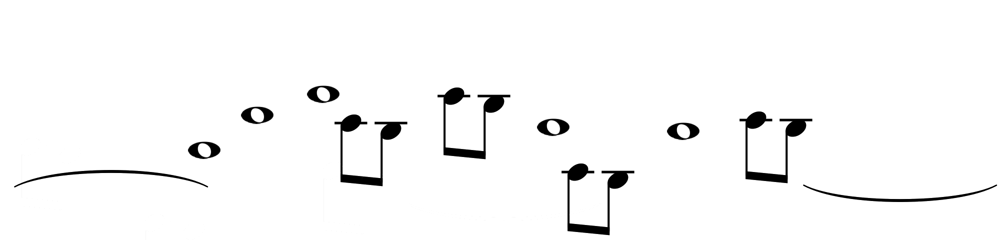
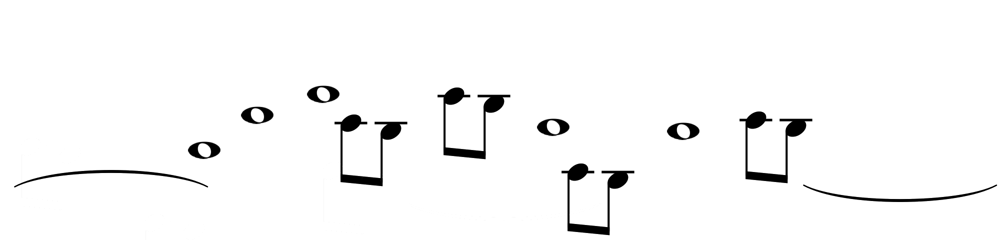

Catworld
In this platform video game, Dédé the cat has to save the world from evil capitalists. To this aim, Dédé has to move (by pressing the left and right arrows), to jump (up arrow), and to throw love (press spacebar) to convert capitalists into lovely hippies. You can also use your gamepad.Either Play in Your Own World
Upload your own world. You can either use a software or take a photo of a handmade picture! Obstacles are in black.Or Play in a Predefined Level


 
